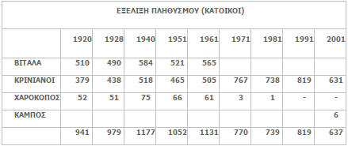

Ο πολιτιστικός σύλλογος ιδρύθηκε το 1919. Αναγνωρίστηκε επίσημα με διάταγμα στις 5 Μαρτίου 1919 (Αρ. 54/1919). Η αναγνώρισή του επιβεβαιώθηκε ξανά στις 28 Αυγούστου 1940 (Αρ. 271/1940).
Καταστατικό Ιδρύματος

Σχετικά με το "Vitala"
Η λέξη "Vitala" έχει λατινική προέλευση. Προέρχεται από τη λέξη "vitale" ή "vitalis", που σημαίνει κάτι σχετικό με τη ζωή. Χρησιμοποιείται στο πλαίσιο της ζωτικότητας και της υγείας. 1. Ο όρος "vitale" αναφέρεται στη ζωή ή τη ζωτικότητα. Προέρχεται από τη λέξη "vita" που σημαίνει ζωή και υποδηλώνει ότι το ίδρυμα σχετίζεται με τη διατήρηση και προστασία της ζωής. 2. Μια άλλη πιθανή ρίζα του "vitale" προέρχεται από τη λατινική λέξη "vitello" που σημαίνει νεαρό μοσχάρι. Χρησιμοποιήθηκε σε συνάρτηση με τη ζωτικότητα και τη νεότητα.
Ο όρος "vitale" αντικατοπτρίζει την αποστολή του πολιτιστικού συλλόγου, που είναι να φέρει ζωή και ζωτικότητα στην κοινότητά του. Η λέξη αυτή προκαλεί σκέψεις για ανάπτυξη, ευημερία και ανανέωση. 3. Ο σύλλογος έχει διαδραματίσει κεντρικό ρόλο στη διατήρηση και προώθηση της πολιτιστικής κληρονομιάς της περιοχής του. Έχει αποτελέσει ένα ζωτικό κέντρο πολιτιστικής ανταλλαγής και διατήρησης παραδόσεων.
Συμπέρασμα: Το έργο του συλλόγου συνεχίζει να αναπτύσσεται και να επεκτείνεται, παραμένοντας ακρογωνιαίος λίθος της πολιτιστικής ταυτότητας της κοινότητας.